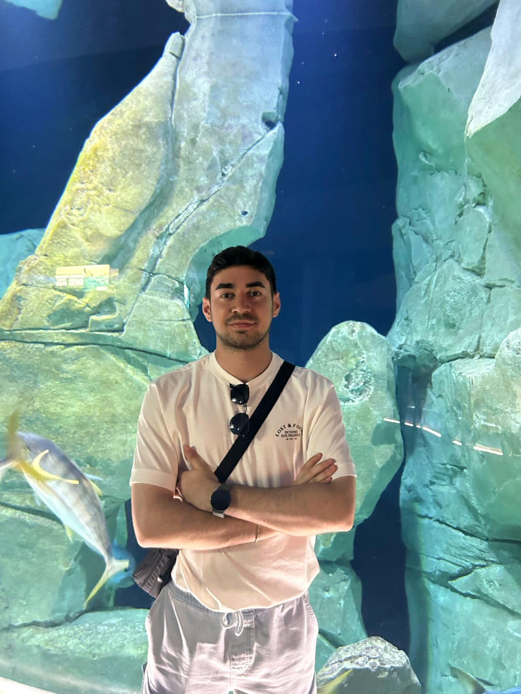

Karadeniz Teknik Üniversitesi Yönetim Bilişim Sistemleri bölümünde, teknolojinin iş dünyası ve güvenlik süreçleriyle kesiştiği noktada uzmanlaşıyorum.
Temel odağım, 'AI for Security' (Güvenlik için Yapay Zeka) vizyonudur. Geleneksel siber güvenlik yöntemlerinin ötesine geçerek, yapay zeka algoritmalarıyla güçlendirilmiş, proaktif ve otonom savunma sistemleri geliştirmeyi hedefliyorum.
Hem ofansif (Red Team) hem de defansif (Blue Team) yetkinliklerimi derinleştirerek, dijital dünyadaki karmaşık tehditlere karşı akılcı, yenilikçi ve sürdürülebilir çözümler üreten bir siber güvenlik mimarı olmak istiyorum.
Proje Yöneticisi (Staj)
Proje süreçlerinin uçtan uca yönetimi, dokümantasyon, performans takibi ve zaman çizelgelerinin optimize edilmesi.
Kampüs Temsilcisi
Üniversite öğrencileri ile sektör profesyonellerini buluşturan etkinliklerin organizasyonu, aktif networking ve topluluk yönetimi.
KTÜ - YBS
Algoritma, Veri Tabanı Yönetimi ve İşletme Stratejileri üzerine lisans eğitimi (2024 - Günümüz).